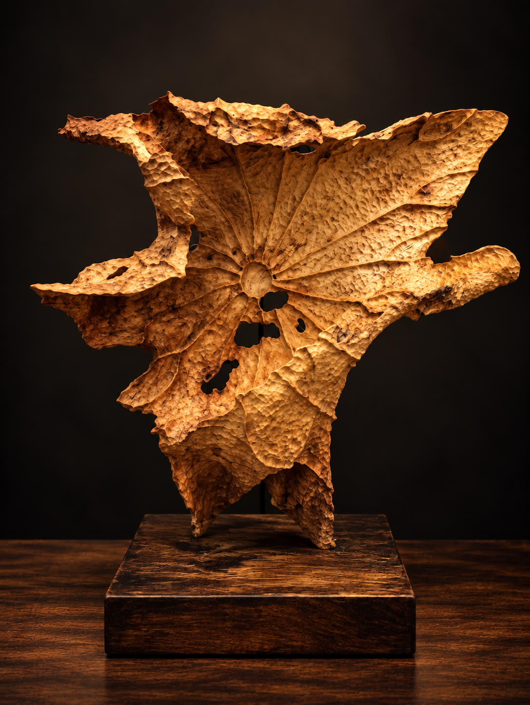

劇本版
看見妳如何走到今天。
從四套系統的共同觀察，梳理性格、關係與反覆出現的模式。
浮生羅盤 ／ 劇本版 結構節選 · 示意
如果只看一頁
- 一句話核心劇本
- 妳用答應別人，
換自己的位置。 - 值得看的矛盾
- 想被需要 × 不想勉強自己
我更常想起的，
是他看木頭的樣子。
他會先看木紋怎麼走，看那些洞和缺口能不能留下來。以前只是記憶，後來慢慢變成我看人的方式。
我不想一開始就告訴妳，妳應該變成誰。先看見妳怎麼撐住、怎麼退讓，怎麼在被需要時忘記自己。
讀這段故事從生活裡的一件事開始
先選一句，接近妳現在的心情。
排盤不是判決，是底圖。八字、紫微斗數、西洋占星、人類圖，
從四種角度觀察，再帶回生活驗證。
同一份出生資料，兩種閱讀自己的方式。
把觀察帶回生活對照，選擇始終在妳手上。

看見妳如何走到今天。
從四套系統的共同觀察，梳理性格、關係與反覆出現的模式。
看見下一次可以怎麼不同。
從四套系統的矛盾、自我敘事與慣性迴圈，找出反覆卡住的地方。
四種語言，一張可供對照的底圖。
以四套傳統與象徵系統輔助自我探索；解讀供妳對照經驗，不是對人格或未來的定論。
從木頭的紋理，讀回自己的生活。
最近哪一次，妳又把自己的需要放到了最後？
這段文字只留在當前頁面，離開後不會保存或傳送。
從一份免費總覽開始。
填寫出生資料，看四盤總覽。
再決定是否深入閱讀。